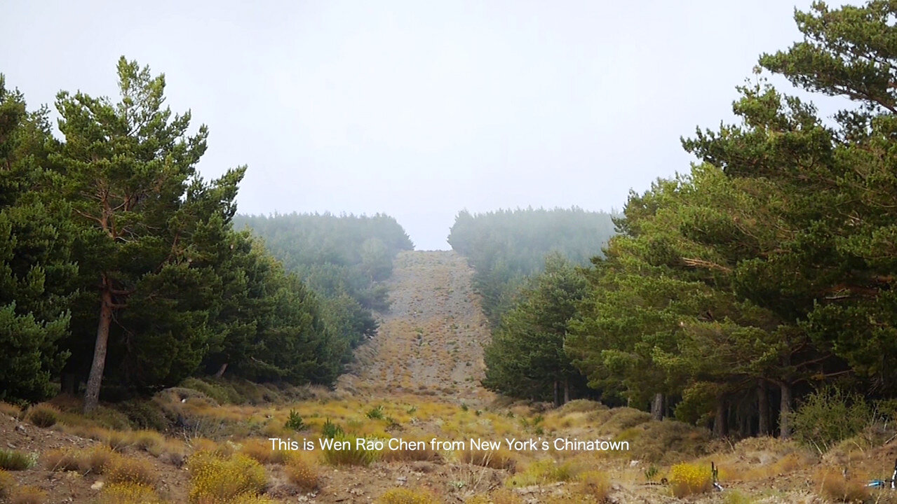

Spanish Vignettes
2015 / 13:21 / HD video
Shot during a short residence in Sierra Nevada in Southern Spain, the video documents the artist's short stay in the Spanish mountains, as he narrates the published diary of Chi Chang - a young Chinese man who joined the International Brigade in Southern Spain, after his education in the United States in the 30s. The video blends personal observation of the natural landscape of Sierra Nevada, with the history of Chinese presence in Spain. Two styles of shots relate to the storylines of the two characters: Chi Chang and the artist himself, on two different observations, journeys and forms of collectivity in Spain 80 years apart.